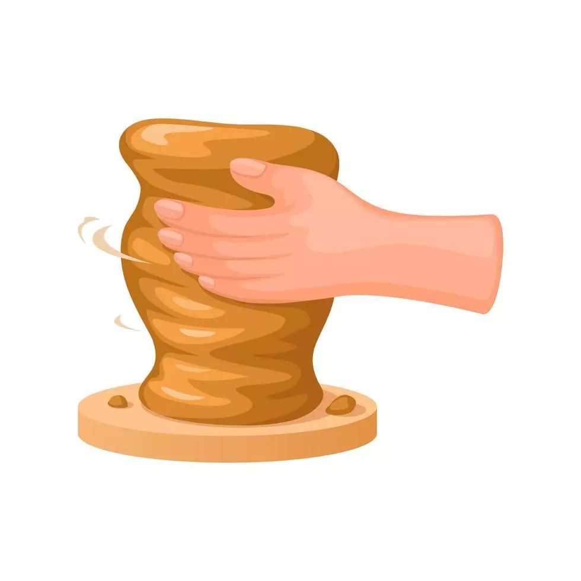

أساسيات فن طي الورق

حرفة يدوية وفنية قديمة تعتمد على تشكيل الطين باليد أو باستخدام عجلة الفخار، ثم حرقه في أفران خاصة عند درجات حرارة عالية ليصبح صلباً ومتيناً
الأدوات
الطين
اسفنجة تنعيم
سلك للقطع
مميزات
تمثل إرث تاريخي وثقافي
تمرين لليدين والمعصمين
توفر فرصة للتعبير عن النفس وتشكيل مجسمات فنية
رقم الكورس
هدف الكورس
رابط الكورس
الثاني
تعلم استخدام الطين و إعادة تدويره
الثالث
تشكيل جدار الفخار
الرابع
تشكيل كوب الفخار